The unthinkable One
Many readers follow closely my investigations since years. The line of thoughts often comes to new and most astonishing insights - also for me. Actually I write only for myself to find reasonable answers for questions not asked or ignored by common physics. Naturally I am glad if someone else is interested in these considerations. I get many clues by mails or even got confirmations. The readers often share my option - except the ´One´.
Nevertheless that ´one-all-exists-of´ is known by diverse names practically at every world-view since ages. I well remember, at the beginning I also had problems to accept that all-one on all points. There are hundreds of researchers accepting necessity of existence of a basic substance behind all physical appearances. Only some researches in addition assume, all ´spiritual contents´ should also have a real basis. Merely one assumes, the aether by itself can not exist by particles (and strange enough just Einstein stated that absolutely clear). For long time I searched for research-colleges, however nobody else defines the aether as a gapless whole. Above this, my aether must show likely density everywhere. If in addition I claim, that medium ´hard like steel´ would be moving inside on and on - even the most ´loyal readers´ refuse compliance.
As mentioned, at the beginning I had some problems - however that mental refusal of readers is a ´logic-short´ in sense of ´... unthinkable ...´. So I must point out the (reduced) possibilities and the (inevitable) necessities of certain motion-pattern within that aether - even discussed by dozens in earlier chapters (which one might read once more). For approval of real aether and its strange movements, at next chapter are discussed the ´impossible´ appearances at surface of Jupiter.
Intensity at the Middle 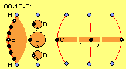
At picture 08.19.01 some aetherpoints are marked blue, representing ´Free Aether´ which is stationary and resting. Realiter also that aether is moving, however only swinging at minimum short track-sections. It´s just like a ´background-noise´, e.g. resulting of multiple overlay of swinging motions of all radiation racing through the universe.
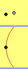
Right side of picture, the red connecting-line between neighbouring aetherpoints is drawn by three positions. The distance between the aetherpoints keeps constant all times. While swinging within space the connecting-line moves at surface of a double-cone. The longer the distance to Free Aether, the wider the aetherpoints can swing. That animation shows these movements by a view top-down and by a side-view.
That principle of intensive movement at the middle is inevitable characteristic of motions within gapless and partless aether. That motion-pattern is contrary to many motions of our experienced material world, where e.g. all wheels are moving most fast at the rim.
Only Swinging, no Rotation 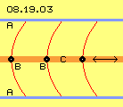
That´s the second essential difference to our experienced world of material particles. Within that normal world, all parts can move independent, at liquids and gases the molecules or atoms are free to move anyhow as they like it. Opposite, within gapless aether all movement must be likely, simultaneous or most analogue to each other.
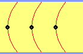
Minimum Bending
Here that different wide swinging is represented by curved connecting line. However the divergences are overdrawn extremely. I don´t know however I suggest, the bending-ability of that ´rigid´ aether is rather limited, probably by ´astronomic relation´ of e.g. 1:10000. If a railway-track would represent the connecting line between neighbouring aetherpoints, the deviation from straight line could be just 1 m at length of 10 km.
We live within a world of steady motions of material ´parts´, also extreme far reaching movements like e.g. the travel of earth around the sun. At the background, within that aether-medium, motions are running extreme fast, however at only minimum narrow tracks. Really existing is only that nearby stationary aether, which inside is only little bit ´trembling´. What we ´realize´ as real appearances, are illusions, are only different motion-pattern of the aether.
Swinging Planes 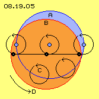
The real motions within aether thus well can differ from the illusion which wide-range motions might produce. At the other hand, that effect might result real material consequences (like e.g. discussed at previous sun-chapter or at following Jupiter-chapter).
Easy Diminish, endless Swinging 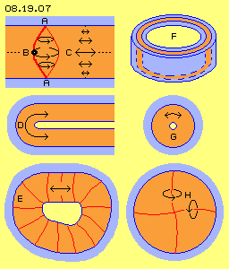
Within that gapless aether however also all neighbours aside must behave conforming. The radius of motion C in the plane of swinging can not be simply reduced. The connecting lines must keep same lengths all times in order to keep constant the distances between neighbours. Into that (here horizontal) direction exists no simple diminish (or fading) of motions. Theoretical that motion is running infinite far, thus would practically build a swinging layer crossing whole universe.
Bows, Pipes, Membranes
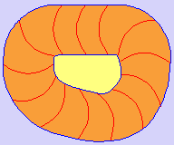
This animation clearly shows, analogue swinging is possible all around. That example already shows, that shape of motion must not be rigid but appears somehow ´alive´. These shells can be closed all around and thus will build ´aetheric membranes´.
If flat pattern are rolled in, they become local limited at least into one direction. Upside right at picture is sketched a section of such a pipe F. The outer wall (blue) represents the border to Free Aether and thus protects the swinging layer (red). Disturbances from outside can not enter the inner room (F, light yellow). So within such pipes can come up ´autonomous´ processes. The motion-pattern of such pipes build diverse physical appearances, e.g. magnetic field-lines, flash-channels or spiral sun-wind-tubes.
The most narrow rolling-in of that elementary swinging-pattern builds a ´solid ball´, like schematic sketched at G. These motion-cranks are arranged symmetric to star-like pattern. At chapter ´08.13. Aether-Model of Atoms´ the variations are described comprehensive, so must not be repeated here. Only the clear result is decisive: there are no elementary nor sub-elementary particles, there exists no atomic nucleus and no electrons are circling around. Atoms just are vortices-complexes of aether within aether. It´s a fact: materia does not exist by particles. Thus also the aether can not be build by particles.
Potentialvortexcloud, Doublecrank
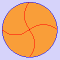
This animation clearly shows, anywhere is motion, nevertheless distances between all aetherpoints keep constant. When aetherpoints are swinging around vertical longitudinal axis and momentary are moving towards left, no ´gap´ may come up at right side, i.e. same time some right-side aetherpoints must swing upward. Synchronous all motions occur within that local unit, mutually balancing.
This example also shows, each motion within that aether demands a second motion right-angle all times (here e.g. the swinging around vertical axis demands additional swinging around horizontal axis). At text-books for electricity are known mnemonic aids like ´rules of right/left hand´ - however no explanation for these strange appearances one could read anywhere up to now. The necessity of the synchronous processes are based on existence of aether and only with properties defined here: partless, gapless, incompressible.
Rosette and Slouch-Hat 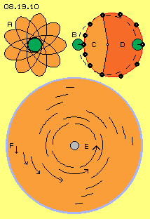
Finally I found diverse solutions, e.g. because movements must not compelling build pure circles. The aetherpoints could also swing by loops around a centre, e.g. at ´rosette-tracks´ like sketched at picture 08.19.10 upside left at A. Also the level of equator must not compelling by plane and stationary within space. That level could tumble around, practically building a ´turning slouch-hat´, like e.g. previous animation shows by motion of ´horizontal´ level.
Track-with-Stroke
Within a liquid medium, no motions are running at exact circle tracks, and also within aether no perfect circled motion exists. In both cases, overlay of movements is just usual. Already two overlaying circle motions result acceleration and deceleration. Instead of uniformity, a ´striking´ motion component comes up. The animation clearly shows that frequent pattern of motions within the aether.
Whirlpool
The Free Aether swings at most narrow sections of tracks in chaotic manner, however as a whole it´s affecting symmetric respective neutral. From the rim F of a whirlpool towards inside, the stroke-component increases, resulting the potential vortex (see lengths of arrows between F and E). Realiter all aether is still nearby stationary, at area of a whirlpool it´s only overlaid by a pushing motion component, which is showing into circle-direction all times. Opposite to these narrow motions, far reaching movements come up only by wandering of ´material particles´ around that centre.
Universal Aether-Pressure
The Free Aether can not eliminate the internal swinging of local units, because no motion within gapless aether could ever be stopped (and only based on this kind of aether-medium, energy-constant is possible). The general aether-pressure can compress the swinging of local units only to an equilibrium of pressures. The ambient pressure conserves the motion-volume, where again the intensity of movement must increase towards inside. This is valid from vortices-complex of an atom up to whirlpools of celestial objects.
Thrust on Materia 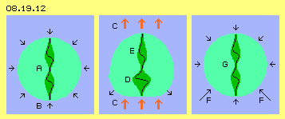
When this atom is positioned within previous whirlpool, it´s exposed to asymmetric pressure of the stroke-component. This additional thrust is marked by red arrows C at the middle of this picture. The atom thus temporary is deformed (here at its below side). The internal swinging is compressed and the aura of the atom is enlarged downside left and right, thus contrary to general aether-pressure (see arrows). When the stroke becomes weaker (at phase of slow back-swinging), this swelling is pressed back into sphere-shape (see arrows F right side of picture). Also the internal tension (of strong curved connecting line) can relax towards upside. The whole atom G got shifted some upward by the stroke-component.
Motion-Pattern wander through Space
Nature-scientists will never be able to find real parts, because there is nothing ´solid´. They can not find any real stuff, as long as they deny existence of the unique real substance. There are only motion-pattern within the aether and only the structure of that motion wanders through the space (as less ´handy´ as one can ´hold´ any sound within air). There is not even a ´flow´ within the aether, but really only stroke-components exist, besides the general, nearby stationary swinging. Also all ´physical forces and fields´ are only swinging pattern of individual kind. Thus no material atoms are moving through space, but only their motion-pattern is forwarded within aether.
Materia and Spirit
By the technical view one is quite sure, all ´material matter´ is a real appearance. However one handles that subject just like the ´arts-sciences´ usually describe fictive interdependencies of ´spiritual contents´ by an abstract terminology. Both sciences in general assume, the ´spiritual appearances´ are not real by previous technical-objective sense, strange enough.
However real reality is not the ´physical-material world´. Only the aether and its internal movement-possibilities are the real background of all physical appearances. Based on properties of the aether the necessity of certain reactions are easy to explain. At the other hand, within that medium multiple overlays are possible, resulting incredible flexible and even flowing pattern. This reaches far beyond the ´mechanistic-rigid´ world-view. For example this includes the idea, spiritual-mental appearances are not only somehow abstract within a ´fictive dimension´ - but are motion-pattern totally real manifested within that One.
Aether and Nothing else
In the past for example one stated, the light can race through a medium so fast, if that ´light-aether´ would show most high density. At the other hand it seemed impossible how solid bodies (like atoms or the earth) could move anyhow through that dense aether. Above this it was not clear, if and how the aether would surround or penetrate the materia. That dualism of materia at the one hand and aether at the other hand blocked the discussion for a century respective all the time up to now.
Finally that Aether-Physics here overcomes the problem: there is only one aether-substance and no second materia-substance (like elementary- or sub-elementary-particles or any kind of substantial matter). Indeed all material, spiritual and mental appearances exclusively are different motion pattern of aether within the aether. Above this, nothing solid is wandering through space. Only the characteristic features of motion-structures are forwarded through the stationary aether (just like ´sound´ wanders through resting air).
Properties of Aether
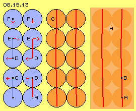
At the middle of picture the aether-particles are marked red and the result of previous movements is marked by curved connecting line G. These theories thus assume separated particles, which can shift relative to each other, i.e. the essential motion occurs within the gaps (a room of No-thing) between the particles. This idea of aether-characteristic is untenable and totally false, based on several reasons.
No solid Particles, no variable Density
Also the property of variable density is often assumed - by other untenable theories. The blue aether-balls right side of picture stand nearby each other, however could be positioned ´at gaps´ and thus achieving much higher density. Within such dense assemblies, practically no longer movements are possible.
Opposite the aether would become much more ´liquid´ if these granules would show wider distances between. Many researchers now imply, swinging can exist based on local varying density within that medium. I ask all protagonists of that idea to state precisely, by which exact conditions ´standing waves´ can exist continually within three-dimensional space with multiple disturbances all around, and why in general any local compression could come up, why differing density is not equalized immediately like at gases, finally why particles should not disperse into the nothing-gaps between.
The gapless One
However, all these processes can also occur within a medium, which is not build by separated particles, but by itself is a homogenous whole. At previous picture 08.19.13 right side, again two curved connecting lines are drawn, however the previous particles are only marked by circles. Realiter this medium exists without separations by parts and thus without any gaps between and thus of likely density all around. For me, the aether is the unique real existing substance and thus it can have that unique property: exiting not by separated particles. I am well aware to be rather ´separated´ by that statement.
Bend-Elasticity
Within aether can not exist elasticity based on locally different density. All protagonists of these ideas are asked to consider honestly, how energy-constant should be valid by these conditions (and energy constant should be valid all over the universe, otherwise it would be ´dead´ long ago). All practical experiences approve, energy in shape of heat inevitably gets ´lost´ at all movements of parts and especially if these are elastic.
The aether is only ´elastic´ by that sense, the connecting lines between aetherpoints allow some bending, like sketched at previous picture at G and H. The changes of relative positions between aetherpoints correspond all times to that rolling-along round surfaces by minimum degree, like sketched at previous picture at A and B.
Common elasticity includes an act of absorption and a pushing-back reaction - which does not occur when aether is bended. Within aether exists only a limit of bend-ability. That restriction is determined by the fact, even the smallest change involves wide volume of neighbouring aether. Also the speed of changes might determine that limit. If however the changes reach the bend-tolerance, immediate relaxation is necessary - by sending off light respective radiation in general (see previous chapters).
Balancing Curvature 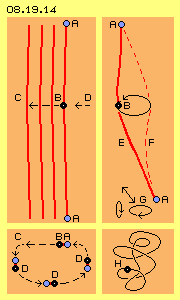
Below left at picture is sketched a cross-sectional view. If that bending into direction C should be locally limited, some black aetherpoints must be shifted (relative to their blue aetherpoints) around at a closed loop (see D and arrows) for balancing the dislocation. Thus finally the gap is closed, which otherwise would exist right side of aetherpoint B.
This sketch shows only the bending of several connecting lines, thus is only a static picture. This graph shows, within gapless aether it´s well possible, neighbouring aetherpoints can take different positions. At the other hand, these bends produce no change, as still every aetherpoint is positioned aside its old neighbours. Finally when all these aetherpoints at their curved connecting lines as a whole are changing their positions within space, this ´still frame´ will become a dynamic motion process. Within aether-granules that vortex would inevitably produce friction, only within a gapless medium these bends and changes will run with null friction.
Continuous Changes
At picture 08.19.14 upside right again are drawn two ´resting´ blue aetherpoints A and between a black aetherpoint B is swinging around a circled track. However, the plane of track and the axis of swinging stand diagonal to each other. During the swing-motion, the distances between blue and black aetherpoints are varying. Thus the red connecting lines can not be straight lines, but in turn must be longer stretched and stronger curved (see E and F). As described upside at that kind of swinging movement, the track of connecting lines is running around at typical double-cone, however its surface-mantle is a multiple curved face respective these cones are lop-sided all times.
Fundamental Structures
Based on strong mutual interdependence of synchronous motions, the aether can not move unrestricted (like e.g. particles can move within gases or also previous aether-granules could move - if there would be great distances between). Within the gapless aether however only a restricted number of motion-pattern in principle can exist with compelling necessary structure-features, like upside mentioned as typology of aether-movement pattern.
This high degree of mutual interdependence is the essential reason for limited bend-ability of the aether. At any case, this dependency is an expression of ´bulkiness´ of a local motion-volume - commonly called ´mass´. Finally these dependencies result certain restrictions, so e.g. perpendicular motions must run same time. Most of these restrictions commonly are called ´nature-laws´ - and common sciences can not name the true reasons for.
Smooth Transitions
By picture 08.19.14 was shown, how curvature within aether is possible and how it can merge into a swinging motion unit. From the standing position all involved aether must change into demanded motion same time and thus must overcome strong inertia. However all aether of universe is already moving and changes of motion are done by much less resistance. At this picture right side at G some simple examples for such variations are sketched.
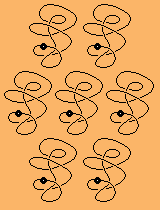
Up to now the blue aetherpoints were assumed to be stationary, naturally however they could move by themselves, into horizontal or vertical directions (see elliptic tracks). That point could also swing diagonal, also by varying length of radius. Depending on these additional movements at the end of that double-cone, unlimited variations are possible for the connecting lines and the central aetherpoint B. Possibly that point could move on a track multiple twisted like shown below right side at H respective demonstrated by the animation, here inclusive some neighbouring points.
Fallacy Particle-Aether
However these considerations were complete fallacy. The sound is forwarded by collisions between air-particles. Each elastic push demands time. Only a part of impulse is forwarded, an other part of forward-motions is lost at each collision. The sound-impulse is not running straight ahead but practically walks at zigzag. Resulting is the sideward spreading and fading of sound.
Soft Light-Aether
Opposite conclusion makes sense: aether must show less particles and gaps - at ideal case must exist by one substance homogenous over all. An impulse can be forwarded without loss only by non-intermitted transfer within non-elastic medium. Only a medium without friction-faces between particles offers maximum possibilities for internal motions. Only within a homogenous medium, the fulcrums can be positioned anywhere and the radius of bending can take any lengths. So opposite to previous and earlier statements concerning ´hardness´ of that substance, now clearly is stated: that aether is ´silky soft´.
Vortex-Screw of Photon 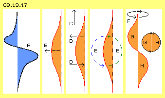
Analogue to previous examples, at B is drawn a bended connecting line. Some aetherpoints are shifted towards left, especially the middle ones (see arrow B). That structure as a whole now is moving upward, like marked by arrow C. The upside aetherpoints thus must move towards left and some later back towards right side, like marked by arrows D.
As all times also the neighbouring aetherpoints are involved, altogether comes up a circled movement, like marked by arrows E. Upside-left are ´too much´ and below-right are ´too few´ aetherpoints. The blue arrow shows the necessary balancing movement. The green arrow shows how the ´surplus´ aetherpoints below-right are shifted towards upside-left.
If once the motion is started, that bump in shape of a ´photon´ is racing through the aether, inclusive these circled balancing movements. However in addition that bump is turning around a longitudinal axis, like marked at F. Starting from their normal position, the aetherpoints are shifted aside during the first phase G of motion-structure and during second part H they are guided back to their old place.
Decisive is the motion marked by blue arrow E, where the aetherpoints are pushed back to their original positions. Thus the spiral connecting line is ´squeezed´ upward, just by the upward-motion represented by green arrow E. The spiral of connecting line is extended at the front side (within upside section G) and at the back the connecting line is contracted (within below section H) - and thus the movement-structure wanders forward within space.
Practically the photon screws itself forward through the aether and also previous balancing movements now are running at spiral tracks. An aetherpoint won´t wander whole length of these arrows E, but all aetherpoints of that region are shifted just a little bit into direction of arrows. As now the bump as a whole is swinging around the longitudinal axis, realiter all these motions are running at circled and somehow asymmetric and diagonal tracks.
So a photon is no ´particle´ racing through space and even no aether is moving far - only the motion-pattern is forwarded by light-speed, (normally) straight-line and (nearby) loss-free. Every aetherpoint along that way must do only once a small swinging deviation. Within gapless aether every ´pressure´ (real every motion component) indeed behaves like at ´noble gases´, so without resistance, the movement-pattern of photon flies through the most soft aether.
Faster than light
So that´s the appearance of light, racing through ´clean´ aether by it´s typical speed. Sometimes however that spiral is deformed and the motion must walk longer ways, taking more time. That´s why light is slower within ´dirty´ aether, e.g. about one third when moving through glass or water. Nevertheless the motion-pattern in general is not disturbed, so afterward within clean aether the photon is flying by light-speed again.
So the speed of material movements is starting point for generation of structure and propagation of electromagnetic wave. Within aether however are many motions which are not born or bound at material vortex-complexes and their travel-speed. Such ´immaterial´ movements well can run faster than light-speed. Finally when such super-fast movement meet or overlay, the limit of light-speed is exceeded.
Inert Aether-Mass 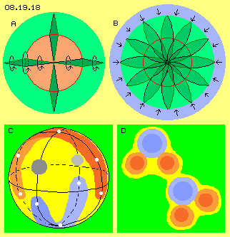
All movements internal are well coordinated, so the vortex-structure within that local unit is swinging on and on. A resting atom keeps its place, based on inertia. If the atom is accelerated, the movement-pattern wanders through the aether. The aether in front of the atom must be transferred into according motions. The necessary movements within a relative wide aether-volume must be build same time. This results resistance and takes time, i.e. inertia exists depending on complexity resp. bulkiness. That´s why acceleration demands input of power corresponding to volume of motion-´mass´.
At the other hand, behind the atom the motion-pattern must end, i.e. the aether there must take its previous behaviour. So if an atom is moving through space, its complex motion-pattern temporary is overlaying the aether along its way. The process in principle is analogue to previous photon. Instead of that simple ´vortex-screw´ however the atom is build by much more motion-elements. Nevertheless, when ever an atherpoint finally swings back at its old place, it affects corresponding pressure for extension of movements at the front side. The atom then shows inertia of moving masses. Like theoretic movements within fictive ´noble gases´ the motion-patters ´floats´ through the real aether indeed without demanding nore loosing energy.
Just for Fun
I could imagine such complex motion-pattern represent corresponding complex content. If someone allows his subconscious to go into resonance with the All-One, such swinging pattern could produce a ´stomach-feeling´, e.g. with meaning like ´naturally the aether must be gapless, naturally motion is running within´.
During last years I analysed many physical phenomena and offered explanations - which most readers accepted only by previous mental reservation. Perhaps now these logic arguments could at least make thinkable, the aether is really existing and its ´unthinkable´ property is true: the aether can not exist by particles, but must be a homogenous substance. Naturally not all of my considerations and proposals can be right. I am lacking knowledge and data of many subjects. However, based on my rough considerations every specialist could achieve better results at his subjects.
For closing the eighth part of my aether-physics, that ´Something in Motion´, at next chapter and just for fun I will tackle a question, the professionals were not able to find the answer since hundred of years: what´s the reason for these crazy movements at surface of Jupiter?
Evert / 2010-10-31
At all subjects of physics exist diverse phenomena, common sciences can not explain the reasons. Finally by the ideas of the Aether-Physics reasonable answers for many open questions come up. For some years I analysed such ´problem-cases´ and developed ideas for solutions. Based on very few and well defined axioms I discussed the processes necessary.
The motions must not be completely parallel. Here for example, only the aetherpoints at the middle are moving on wide circled track, while upside and below neighbours are swinging at tracks more narrow. So the extend respective intensity of motions are gradually different. The tracks of neighbouring aetherpoints can vary in temporary processes. So the movements of aetherpoints must not be congruent in total.
 Nevertheless the impression comes up, the whole red face would eccentric turn around the stationary blue face (like marked by arrow D). So a complete wide-rang revolution results each time, when one swinging motion at only narrow circle is done. The animation clearly shows this effect, when one observes the motion of the ´blue sickle´. No matter how large the red face would be, the not-overlaid area (here inverse shown by the blue sickle) is running around the total circumference - even each aetherpoint is swinging simply a little bit at most small circle track.
Nevertheless the impression comes up, the whole red face would eccentric turn around the stationary blue face (like marked by arrow D). So a complete wide-rang revolution results each time, when one swinging motion at only narrow circle is done. The animation clearly shows this effect, when one observes the motion of the ´blue sickle´. No matter how large the red face would be, the not-overlaid area (here inverse shown by the blue sickle) is running around the total circumference - even each aetherpoint is swinging simply a little bit at most small circle track.
That´s a matter of impossibility and thus I considered that motion-patter not suitable - until I was free enough to think by ´curved faces´. Naturally a swinging layer must not be perfect plane, naturally the layer can be bended and can run back parallel, like sketched at D. As an example for that ´double-layer´ I mentioned the unsolved characteristics of ´ground radiation´ which is told to stand like a ´curtain´ (an impossible shape for normal radiations).
At previous picture 08.19.07 below right side, an other basic motion-pattern is sketched. I had detected that ´potentialvortexcloud´ H as a local unit since years, e.g. as it´s the motion-pattern of an electron. Above this, that ´double-crank´ is the essential element of many appearances.
An important characteristic of aether-movements is the overlay of swinging, like e.g. sketched at previous picture upside right. One first turning motion is marked by dotted circle. At this track all around is running a second turning (B, green), into likely sense and likely speed. Resulting is a track with different sections. During one half of time, the aetherpoint is moving relative slow through space (section C, light-red), during the second half of time the aetherpoint is moving faster and longer distance through space (section D, red). Again this is a grave difference between ´steady-rigid´ technology and ´virtuous-variable´ aether movements. Naturally also within our experienced world the particles are accelerated and delayed. However continuous steady processes are the realms of techniques. For example an optimum is achieved when wheels rotate by constant revolutions or vehicles are moving straight ahead by constant speed. Opposite, the motions within aether in principle are pulsating or correspond to flows at uneven tracks.
Again this is a grave difference between ´steady-rigid´ technology and ´virtuous-variable´ aether movements. Naturally also within our experienced world the particles are accelerated and delayed. However continuous steady processes are the realms of techniques. For example an optimum is achieved when wheels rotate by constant revolutions or vehicles are moving straight ahead by constant speed. Opposite, the motions within aether in principle are pulsating or correspond to flows at uneven tracks.
Again it´s the gapless-feature of aether, which inevitably demands the stroke-components to move like a round-about, practically as an act of ´self-organization´. If that stroke should not run straight on throughout universe, the strokes all times must show into tangential directions around a centre (at previous picture 08.19.10 at E). This is necessary at small local units and this is valid for huge whirlpools e.g. of earth or of the ecliptic.
That chaotic narrow swinging of Free Aether ´rattles´ at wide motions as it tries to reduce long-stretched track-sections to its own short shaking. The Free Aether thus affects a general pressure onto all local units. The atoms have internal movements at long-stretched and ordered tracks. Atoms are compressed into shape of spheres because all around the Free Aether with its chaotic-narrow motions affects that general aether pressure.
That´s the transit from motions of aether to movements of ´material particles´ within space. Atoms can ´stand´ within space or they are drifting passive within a flow, like shown by example of thrust within previous whirlpool. Atoms may interact e.g. by mutual collisions or atoms fly through space started by other forces. Within that world the parts and particles are moving according to laws of mechanics, of thermodynamics, of chemical reactions, bases on electromagnetic forces, on gravity or any other physical influences.
The nature-sciences describe material-technical processes, define formal interdependencies, make actions calculable, so the processes become well usable by machines. It´s documented how something functions - however common sciences have no explanations why processes take place that kind. Even most basic terms (e.g. mass, energy, weight, inertia, physical forces and diverse fields) are not clear defined, but only by circular reasoning. For example one knows there is something acting like an attraction - however nobody knows why these forces should act that kind. The mainstream physics handle these ´phenomena´ as if they would be just pure abstract occurrences.
Some might doubt how one can claim, nothing is real but that aether-substance. Absolutely honest, I can no longer imagine how one could deny existence of a basic matter behind all (illusionary) occurrences. At most, one could discuss about physical properties, the aether must show in order to result known appearances.
Merely one researcher defines the properties of ´his´ aether exactly. Mostly any kind of ´granules´ are assumed or minimum small ´sub-quantum-particles´. At picture 08.19.13 left side is sketched a collection of such ´aether-particles´, gathered relative near to each other to achieve high density, as demanded for previous ´light-aether´. Question now is, how motion could be possible inside of these suggested granules.
First of all I can not recognize why rigid parts should exist at all. The particles could as well stick fix at their matching area and the bending could well occur within the particles. Second, I can not recognize why separated particles should not immediately disperse into ambient nothing. Who ever assumes the existence of separated, solid particles is asked to define exactly, what should be within the inevitable gaps between parts. And in addition he might consider all conditions for building separated units, inclusive the demanded forces for their continuous existence. Up to now, nobody was able to answer that simple, nevertheless deciding ´particle-question´.
If motion between tightly packed particles should work, it will only function by rolling along their surfaces, e.g. like previous particles B is turning around A. However this is possible only thus far as neighbouring particles can do analogue motions same time. No part by itself can move without involving neighbours to move synchronous. The motions must not be completely identical, like e.g. the previous example of bending of some few layers shows. The range of swivel-motions can vary, e.g. like discussed upside by example of double-crank..
Nowhere in nature one can recognize anything would be totally rigid. Even the aether is most dense and thus appears rather hard, it´s well comparable with a liquid medium. Its internal movements are comparable with previous rolling of a ball along neighbouring ball. As all areas of aether are mutually interdependent (like previous diverse ´balls´), in general come up ´flowing movements´.
One could imagine all aetherpoints arranged within a right-angle matrix. Corresponding to that idea, here the connecting lines simply were drawn as straight lines. At previous picture however, the vortex was started from curved connecting lines - and that understanding is much more conforming to fluids: neighbouring aetherpoints must do corresponding movement - however not alongside straight line, but prevailingly along curved lines or even spiral winded lines.
Many readers still won´t believe, within particle-less and gap-less aether any motion should be possible. It was indeed very difficult for me to detect possible motion pattern - as long as I was fixated on exact circle-round or at least elliptical or oval tracks and searching for exact sphere build by aether movements. This was an absolute off-beat realm for ´technologists´ - while fluids use quite other motions for optimum flows, especially within liquids with their inherent cohesion.
The properties of aether thus allow principle possibilities for motions and same time necessary restrictions of movements. Resulting are e.g. about hundred motion-pattern representing the chemical elements and physical fields. However there is no argument, why a homogenous substance should allow only that restricted number of motion-structures. So most probably, beyond these basic motion-types will exist smooth transition for unlimited number of variations, e.g. for manifesting the great variety of an additional ´reality´, up to spiritual-mental content.
By philosophic view, the necessity of a basic substance was present all the times. By physical view, the idea of ´light-aether´ was developed in comparison with the sound: the propagation of sound needs a real medium, thus a material ´light-medium´ should exist also. As the light is thousand times faster than sound, that aether should be corresponding denser. The time-delay of sound is bound to distances between particles, so extreme small aether-particles should stand extreme nearby each other.
Opposite, a light-ray is running dead-straight through space, for years practically by same strength. So light can not function like sound. If light should propagate through even smaller and much more particles, even more gaps would exist and more collisions with elastic pushes would be necessary - and the light would be slower and weaker than sound.
A photon is generated by stress: if two atoms meet too fast, the bend-ability of aether is strained to its maximum. That situation demands immediate relaxation. That´s why a photon respective any electromagnetic wave shows that most simple motion-structure (a spiral with only one ´turn´), which can fly off the location of stress in the shortest possible time.
Simple motion-pattern of radiation of all kind are steady racing through the aether. Relative slow are also moving large arrangements of double-cone motion-pattern, representing material appearances. Upside was shown, also virtuous swinging is possible. An aetherpoint and its neighbours e.g. could perform that ´dance´ of previous animation. That swinging must not be local limited, but could also be far-reaching respective ´omnipresent´ within aether-background.
08.20. Aether-Vortices of Gas-Planets
08. Something in Motion